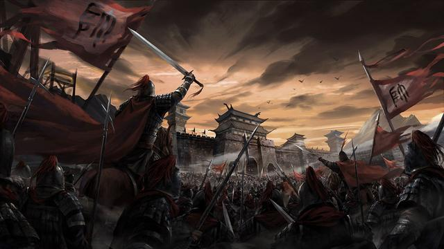

欢迎跃过历史:喆喆
欢迎跃过历史:喆喆
东汉末年三大战役是指三国时期发生的三个大规模著名战役，分别是官渡之战、夷陵之战。

1、三大战役
①官渡之战 ：官渡之战，是东汉末年“三大战役”之一，也是中国历史上著名的以弱胜强的战役之一。东汉献帝建安五年（200年），曹操军与袁绍军相持于官渡（今河南中牟东北），在此展开战略决战。曹操奇袭袁军在乌巢的粮仓（今河南封丘西），继而击溃袁军主力。此战奠定了曹操统一中国北方的基础。
官渡之战战后相关事务：
1、官渡之战后，曹军活捉了沮授。沮授一直深得曹操赏识，起初曹操赦免沮授并且厚待他，但最后沮授因想要回到袁绍阵营而被曹操杀害。
2、曹操在袁绍大营发现许县及军中的某些人员，曾写信向袁绍表态，他下令将信件全部焚毁，以示安抚反侧。
3、官渡之战后，袁绍仅八百骑逃回北方，后悔不用田丰之言，但逢纪诋毁田丰，结果田丰被袁绍杀害。
4、冀州地区发生反袁的动乱，袁绍率军平定。
②赤壁之战 ：赤壁之战，是指三国形成时期，孙权、刘备联军于建安十三年（208年）在长江赤壁（今湖北省赤壁市西北）一带大破曹操大军，奠定三国鼎立基础的以少胜多,以弱胜强的著名战役。这是中国历史上以少胜多的著名战争之一，也是三国时期“三大战役”中最为著名的一场。它也是中国历史上第一次在长江流域进行的大规模江河作战，标志着中国军事政治中心不再限于黄河流域。
③夷陵之战 ：夷陵之战，又称彝陵之战、猇亭之战，是三国时期蜀汉昭烈帝刘备对东吴发动的大规模战役，是中国古代战争史上一次著名的积极防御的成功战例，也是三国“三大战役”的最后一场。章武元年（221年）七月，也就是刘备称帝三个月后，刘备以替名将关羽报仇为由，挥兵东征东吴孙权，气势强劲。孙权求和不成后，决定一面向曹魏求和、避免两线作战，一面派陆逊率军应战。陆逊用以逸待劳的方法，阻挡了蜀汉军的攻势，更在章武二年（222年）八月夷陵一带打败蜀汉军。夷陵之战的惨败，是蜀汉继关羽失荆州后又一次实力大损。
毛泽东读卢弼《三国志集解》卷五十八《吴书·陆逊传》的批语说：“土石为之，亦不能久，粮不足也。宜出水流域，直出湘水以西，因粮于敌，打运动战，使敌分散，应按不暇，可以各个击破。”
2、结果
①官渡之战，经过一年多的对峙，至此以曹操的全面胜利而告结束。曹操以两万左右的兵力，出奇制胜，击破袁军十万。这个战例成为中国历史上以弱胜强，以少胜多的典型战例。曹操以其非凡的才智和勇气，写下了他军事生涯最辉煌的一页。公元202年（建安七年），袁绍因兵败忧郁而死，而袁绍诸子争位，曹操乘机彻底击灭了袁氏军事集团，公元207年（建安十二年）年，曹操又征服乌桓，至此，战乱多时的北方实现了统一。
②赤壁之战的失利使曹操失去了在短时间内统一全国的可能性，而孙刘双方则借此胜役开始发展壮大各自势力，曹、刘、孙三家争夺荆州之战揭开序幕。此后，曹操退回北方，再没有机会以如此大规模进行南征。此战形成天下三分的雏型，奠定三国鼎立的基础。
③这场战役之后近四十年的时间内，三国互相之间的疆域基本保持不变，吴汉重修于好的联盟再也没有发生动摇，三国局势出现稳定的对峙，彝陵之战也因此被认为是前后三国的分界点之一。